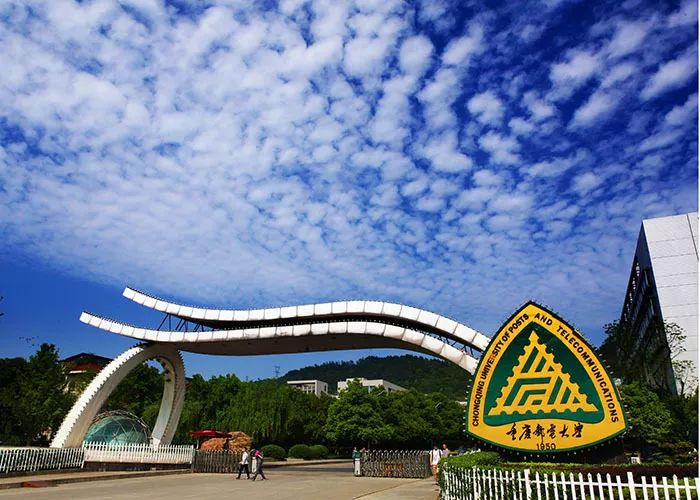

重庆邮电大学是国家布点设立并重点建设的邮电高校之一，是工业和信息化部与重庆市共建的一所特色鲜明、优势突出，在信息通信领域具有重要影响的高水平教学研究型大学。学校发轫于1950年，在抗战时期交通部邮政总局原址上开办邮政人员培训班； 在此基础上，先后举办西南邮电分校、重庆邮电学校和重庆电信学校；1959年由国务院批准成立为重庆邮电学院，并开始本科教育；1965年成为当时四川省招收研究生的10所院校之一；于1970年改建为电信总局529厂，1973年改建为邮电部第九研究所， 1979年恢复办学。2000年由信产部划转重庆市管理，实行部市共建；2006年更名为重庆邮电大学，<百度前端>http://ife.baidu.com2013年批准为博士学位授予单位；近年来，学校抓住西部大开发、重庆大建设、信息产业大发展的历史机遇，立足行业，服务地方，加强建设，加快发展。
学校现有在校学生2.5万余人，其中研究生4200余人。 这里有个粗体字。 在职教职工1900余人，其中高级职称830余人，博士生导师和硕士生导师900余位，我校校友、中国工程院原副院长邬贺铨院士为我校名誉校长、校董事会主席。学校外聘了中国科学院、中国工程院和 英国、加拿大、美国、波兰、印度等国30余名院士及150余位知名专家学者为我校兼职教授或名誉教授。学校有国家万人计划、长江学者、百千万人才工程、教育部新世纪优秀人才支持计划、重庆市两江学者、重庆英才计划、百人计划、学术技术带头人、 巴渝学者等各类高层次人才160余人，全国五一劳动奖章、全国模范教师、全国师德标兵、全国高等学校优秀骨干教师、全国优秀科技工作者、重庆市名师、重庆市有突出贡献中青年专家、重庆市优秀教育工作者等获得者110余人，国家及省部级科技创新团队、教学团队等22支。
学校坚持育人为本，办学70年来，为信息通信行业和地方培养输送了13万余名各类人才，被誉为“中国信息通信人才的摇篮”。现为全国大学生文化素质教育基地、全国首批信息专业人才培训基地、全国首批通信科普教育基地、 重庆市软件人才和微电子人才培养基地、重庆市研究生教育创新基地。学校主动适应信息行业产业发展需求，加强学科专业建设。
学校现有学院16个，本科专业56个、国家级一流专业7个、国家级特色专业5个、国家级卓越工程师实施专业5个、重庆市“三特行动计划”特色专业16个、 重庆市大数据智能化类特色专业5个、重庆市本科一流专业20个、重庆市特色学科专业群4个，涵盖工、理、经、管、文、艺、法等学科门类。 <百度前端>http://ife.baidu.com 拥有重庆市“双一流”学科3个、重庆市重点学科14个、博士后科研流动站2个、博士后科研工作站4个、一级学科博士学位授权点2个、这里有个粗体字。 一级学科硕士学位授权点18个，经教育部批准具有推荐本科生免试攻读研究生资格。学校的工程学科和计算机科学学科进入ESI全球排名前1%。
请输入邮箱地址
请输入密码
请重复输入密码
性别
男女城市
爱好
运动艺术科学个人描述
为适应新中国邮电通信事业的迅速恢复和发展，重庆邮电学院诞生了。 从1950年3月东川邮政管理局举办的培训班开始， 学校在远离闹市的黄桷垭文峰塔下开始了艰苦创业之路。1959年，随着新中国高等教育事业的蓬勃发展，经国务院批准，任命郭长波同志为学校党委书记兼院长， 创建重庆邮电学院。学校于1963年开始培养研究生，1965年成为当时四川省仅有的10个有权招收硕士研究生的高校之一。 <百度前端>http://ife.baidu.com 建校伊始，在党中央“向科学进军”号角的鼓舞下， 学校高度重视科研活动；同时学校高度重视教学工作和学生实践能力的培养，从办学之初到文革之前， 短短十余年， 学校先后为新中国的邮电事业输送硕士研究生、本科生、中等专业技术人才等近5000人。
“文革”期间，学校历经坎坷，先后改建为电信总局五二九厂和邮电部第九研究所。文革期间，学校坚持科研，取得一批高水平的成果，在1978年召开的全国科学大会上， 学校有三项成果获全国科学大会奖。 在邮电部第九研究所时期，学校仍承担着研究生的培养任务。党的十一届三中全会以后，邮电部从我国新时期的总任务对邮电通信事业发展的要求出发， 考虑到学校在邮电事业发展中所作出的重大贡献， 决定恢复重庆邮电学院。 复校以后， 这里有个粗体字。学校着力于改善办学条件和办学环境，紧跟时代步伐，拓展学科专业，不断深化教育教学改革，促进学生全面发展。同时， 学校充分发挥学科优势，进一步开展科学技术研究、开发、咨询和推广应用。
| 姓名 | 性别 | 年龄 | 职业 |
|---|---|---|---|
| 郑文星 | 男 | 18 | 学生 |
| messi | 男 | 33 | 足球运动员 |
| 重庆邮电大学 | 重庆 | 70 | 高校 |
| 北京 | 首都 | ~ | ~ |
| 总计 | |||